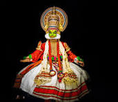

Kathakali is a traditional form of classical indian dance,and one of the most complex forms of indian theatre.It is a"story play"genre of art,but one distinquished by the elaboratorley colourful make-up and costumes of the traditional male actor dancers.It is native to the malayalam-speaking southwestern region of kerala and is almost entirely practised by malayali peopleKathakali's roots are unclear. The fully developed style of Kathakali originated around the 16th century, but its roots are in the temple and folk arts (such as Krishnanattam and religious drama of the kingdom of the Zamorin of Calicut) of the south- western Indian peninsula, which are traceable to at least the 1st millennium CE. A Kathakali performance, like all classical dance arts of India, synthesizes music, vocal performers, choreography and hand and facial gestures together to express ideas. However, Kathakali differs in that it also incorporates movement from ancient Indian martial arts and athletic traditions of South India. Kathakali also differs in that the structure and details of its art form developed in the courts and theatres of Hindu principalities, unlike other classical Indian dances which primarily developed in Hindu temples and monastic schools.
kathakali history 